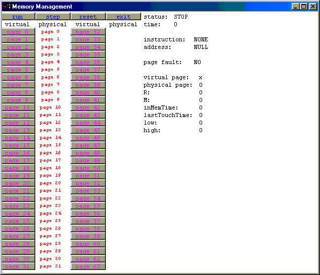

This document is a user guide for the MOSS Memory Management Simulator. It explains how to use the simulator and describes the display and the various input files used by and output files produced by the simulator. The MOSS software is designed for use with Andrew S. Tanenbaum, Modern Operating Systems, 2nd Edition (Prentice Hall, 2001). The Memory Management Simulator was written by Alex Reeder (alexr@e-sa.org). This user guide was written by Ray Ontko (rayo@ontko.com).
This user guide assumes that you have already installed and tested the simulator. If you are looking for installation information, please read the Installation Guide for Unix/Linux/Solaris/HP-UX Systems or the Installation Guide for Win95/98/Me/NT/2000 Systems.
The memory management simulator illustrates page fault behavior in a paged virtual memory system. The program reads the initial state of the page table and a sequence of virtual memory instructions and writes a trace log indicating the effect of each instruction. It includes a graphical user interface so that students can observe page replacement algorithms at work. Students may be asked to implement a particular page replacement algorithm which the instructor can test by comparing the output from the student's algorithm to that produced by a working implementation.
The program reads a command file, optionally reads a configuration file, displays a GUI window which allows you to execute the command file, and optionally writes a trace file.
To run the program, enter the following command line.
$ java MemoryManagement commands memory.conf
The program will display a window allowing you to run the simulator. You will notice a row of command buttons across the top, two columns of "page" buttons at the left, and an informational display at the right.
Typically you will use the step button to execute a command from the input file, examine information about any pages by clicking on a page button, and when you're done, quit the simulation using the exit button.
The buttons:
| Button | Description |
|---|---|
| run | runs the simulation to completion. Note that the simulation pauses and updates the screen between each step. |
| step | runs a single setup of the simulation and updates the display. |
| reset | initializes the simulator and starts from the beginning of the command file. |
| exit | exits the simulation. |
| page n | display information about this virtual page in the display area at the right. |
The informational display:
| Field | Description |
|---|---|
| status: | RUN, STEP, or STOP. This indicates whether the current run or step is completed. |
| time: | number of "ns" since the start of the simulation. |
| instruction: | READ or WRITE. The operation last performed. |
| address: | the virtual memory address of the operation last performed. |
| page fault: | whether the last operation caused a page fault to occur. |
| virtual page: | the number of the virtual page being displayed in the fields below. This is the last virtual page accessed by the simulator, or the last page n button pressed. |
| physical page: | the physical page for this virtual page, if any. -1 indicates that no physical page is associated with this virtual page. |
| R: | whether this page has been read. (1=yes, 0=no) |
| M: | whether this page has been modified. (1=yes, 0=no) |
| inMemTime: | number of ns ago the physical page was allocated to this virtual page. |
| lastTouchTime: | number of ns ago the physical page was last modified. |
| low: | low virtual memory address of the virtual page. |
| high: | high virtual memory address of the virtual page. |
The command file for the simulator specifies a sequence of memory instructions to be performed. Each instruction is either a memory READ or WRITE operation, and includes a virtual memory address to be read or written. Depending on whether the virtual page for the address is present in physical memory, the operation will succeed, or, if not, a page fault will occur.
There are two operations one can carry out on pages in memory: READ and WRITE.
The format for each command is
oroperation address
where operation is READ or WRITE, and address is the numeric virtual memory address, optionally preceeded by one of the radix keywords bin, oct, or hex. If no radix is supplied, the number is assumed to be decimal. The keyword random will generate a random virtual memory address (for those who want to experiment quickly) rather than having to type an address.operation random
For example, the sequence
causes the virtual memory manager to:READ bin 01010101 WRITE bin 10101010 READ random WRITE random
The "commands" input file looks like this:
// Enter READ/WRITE commands into this file // READ// WRITE READ bin 100 READ 19 WRITE hex CC32 READ bin 100000000000000 READ bin 100000000000000 WRITE bin 110000000000001 WRITE random
The memset command is used to initialize each entry in the virtual page map. memset is followed by six integer values:
For example,
specifies that virtual page 34 maps to physical page 23, and that the page has not been read or modified.memset 34 23 0 0 0 0
Note:
There are a number of other options which can be specified in the configuration file. These are summarized in the table below.
| Keyword | Values | Description |
|---|---|---|
| enable_logging | true false | Whether logging of the operations should be enabled. If logging is enabled, then the program writes a one-line message for each READ or WRITE operation. By default, no logging is enabled. See also the log_file option. |
| log_file | trace-file-name | The name of the file to which log messages should be written. If no filename is given, then log messages are written to stdout. This option has no effect if enable_logging is false or not specified. |
| pagesize | n power p | The size of the page in bytes as a power of two. This can be given as a decimal number which is a power of two (1, 2, 4, 8, etc.) or as a power of two using the power keyword. The maximum page size is 67108864 or power 26. The default page size is power 26. |
| addressradix | n | The radix in which numerical values are displayed. The default radix is 2 (binary). You may prefer radix 8 (octal), 10 (decimal), or 16 (hexadecimal). |
The "memory.conf" configuration file looks like this:
// memset virt page # physical page # R (read from) M (modified) inMemTime (ns) lastTouchTime (ns) memset 0 0 0 0 0 0 memset 1 1 0 0 0 0 memset 2 2 0 0 0 0 memset 3 3 0 0 0 0 memset 4 4 0 0 0 0 memset 5 5 0 0 0 0 memset 6 6 0 0 0 0 memset 7 7 0 0 0 0 memset 8 8 0 0 0 0 memset 9 9 0 0 0 0 memset 10 10 0 0 0 0 memset 11 11 0 0 0 0 memset 12 12 0 0 0 0 memset 13 13 0 0 0 0 memset 14 14 0 0 0 0 memset 15 15 0 0 0 0 memset 16 16 0 0 0 0 memset 17 17 0 0 0 0 memset 18 18 0 0 0 0 memset 19 19 0 0 0 0 memset 20 20 0 0 0 0 memset 21 21 0 0 0 0 memset 22 22 0 0 0 0 memset 23 23 0 0 0 0 memset 24 24 0 0 0 0 memset 25 25 0 0 0 0 memset 26 26 0 0 0 0 memset 27 27 0 0 0 0 memset 28 28 0 0 0 0 memset 29 29 0 0 0 0 memset 30 30 0 0 0 0 memset 31 31 0 0 0 0 // enable_logging 'true' or 'false' // When true specify a log_file or leave blank for stdout enable_logging true // log_file// Where is the name of the file you want output // to be print to. log_file tracefile // page size, defaults to 2^14 and cannot be greater than 2^26 // pagesize or <'power' num (base 2)> pagesize 16384 // addressradix sets the radix in which numerical values are displayed // 2 is the default value // addressradix addressradix 16 // numpages sets the number of pages (physical and virtual) // 64 is the default value // numpages must be at least 2 and no more than 64 // numpages numpages 64
The output file contains a log of the operations since the simulation started (or since the last reset). It lists the command that was attempted and what happened as a result. You can review this file after executing the simulation.
The output file contains one line per operation executed. The format of each line is:
where:command address ... status
READ 4 ... okay READ 13 ... okay WRITE 3acc32 ... okay READ 10000000 ... okay READ 10000000 ... okay WRITE c0001000 ... page fault WRITE 2aeea2ef ... okay
This program is free software; you can redistribute it and/or modify it under the terms of the GNU General Public License as published by the Free Software Foundation; either version 2 of the License, or (at your option) any later version.
This program is distributed in the hope that it will be useful, but WITHOUT ANY WARRANTY; without even the implied warranty of MERCHANTABILITY or FITNESS FOR A PARTICULAR PURPOSE. See the GNU General Public License for more details.
You should have received a copy of the GNU General Public License along with this program (see copying.txt); if not, write to the Free Software Foundation, Inc., 59 Temple Place, Suite 330, Boston, MA 02111-1307 USA
Please send suggestions, corrections, and comments to Ray Ontko (rayo@ontko.com).
Last updated: July 28, 2001